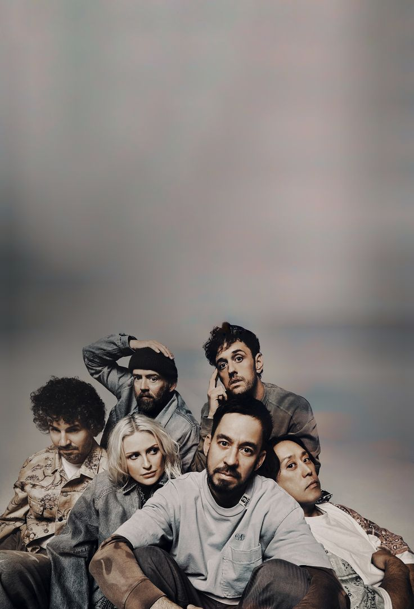
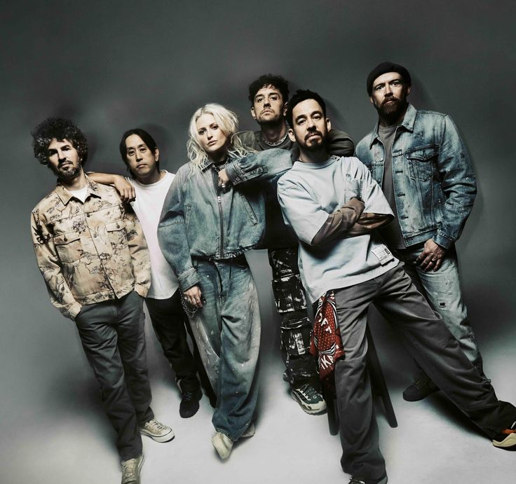
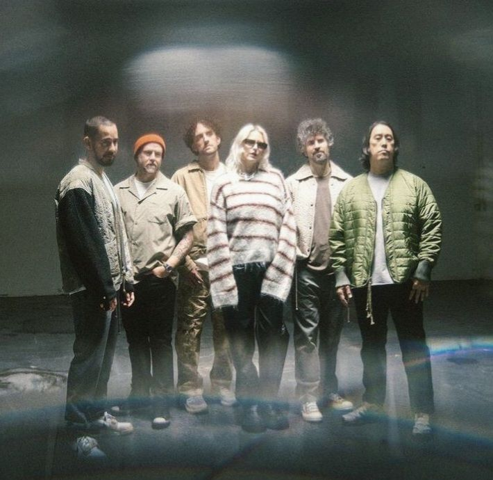
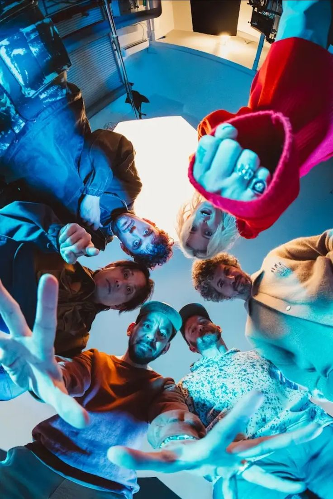
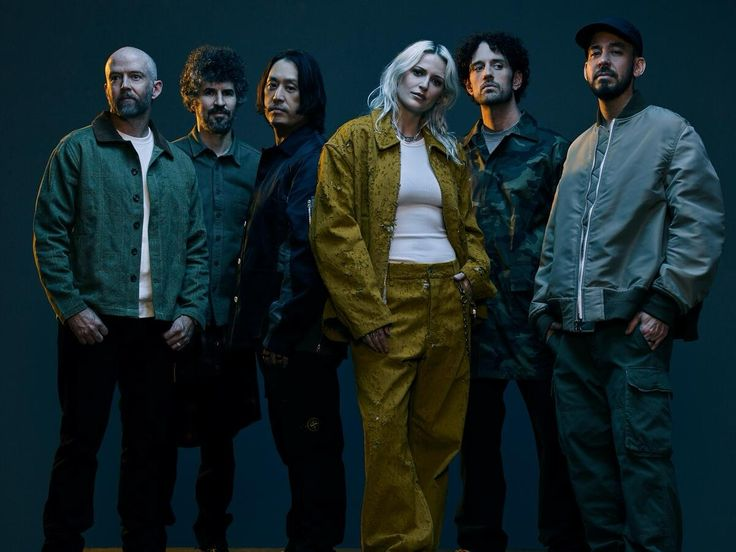

Une nouvelle ère pour Linkin Park
Le groupe poursuit son aventure musicale avec une nouvelle formation et de nouveaux projets.
Une nouvelle ère
Retrouvez les moments marquants du retour de Linkin Park.

Le groupe poursuit son aventure musicale avec une nouvelle formation et de nouveaux projets.

Découvrez les membres qui participent à ce nouveau chapitre de l’histoire du groupe.

Après plusieurs années d’absence, Linkin Park a annoncé son retour en 2024.

La tournée From Zero accompagne le retour du groupe sur scène devant ses fans.

Avec Emily Armstrong au chant, le groupe fait évoluer son identité tout en conservant son énergie.